Bringing all 19 topics together! Master the end-to-end Exploratory Data Analysis (EDA) pipeline: diagnostic audits, distribution profiling, missingness maps, outlier investigation, correlation heatmaps, multi-panel dashboards, and responsible data storytelling.
"Agar tumhare paas 5,000 rows aur 15 columns ka dataset hai, toh machine learning model shuru karne se pehle tum kaise samjhoge ki data mein kya chal raha hai?"
Bohot se beginners seedha dataset load karte hain aur bina soche-samjhe model.fit() run kar dete hain. Natija? Garbage in, garbage out! Real-world data messy hota hai: values missing hoti hain, sensors 0 plunge karte hain, categories misspelled hoti hain, aur distributions heavily skewed hoti hain.
Exploratory Data Analysis (EDA) vo scientific aur visual investigation process hai jahan hum data ko summarize, explore, aur plot karte hain taaki underlying patterns, anomalies, aur relationships ko deeply samajh sakein.
Sirf summary statistics (jaise Mean aur Standard Deviation) dekhna bohot misleading ho sakta hai! Do completely different datasets ka Mean aur Linear Regression fit exact same ho sakta hai — lekin jab aap unhe plt.scatter() se visualize karte hain, toh pata chalta hai ki ek dataset straight line follow kar raha hai aur doosra ek parabolic curve hai!
import numpy as np
import matplotlib.pyplot as plt
np.random.seed(42)
# Dataset 1: Linear relationship
x1 = np.linspace(10, 30, 40)
y1 = 2.0 * x1 + 10 + np.random.normal(0, 3, 40)
# Dataset 2: Parabolic curve with virtually identical Mean X and Mean Y!
x2 = np.linspace(10, 30, 40)
y2 = -0.35 * (x2 - 20)**2 + 60 + np.random.normal(0, 2, 40)
print(f"Dataset A: Mean X = {x1.mean():.1f}, Mean Y = {y1.mean():.1f}")
print(f"Dataset B: Mean X = {x2.mean():.1f}, Mean Y = {y2.mean():.1f}")
fig, (ax1, ax2) = plt.subplots(1, 2, figsize=(10, 4), dpi=150)
ax1.scatter(x1, y1, color='#0284c7', label='Observed Points')
ax1.set_title("Dataset A: Pure Linear Trend", fontweight='bold')
ax1.grid(True, linestyle='--', alpha=0.3)
ax2.scatter(x2, y2, color='#d97706', label='Observed Points')
ax2.set_title("Dataset B: Non-Linear Inverted Parabola", fontweight='bold')
ax2.grid(True, linestyle='--', alpha=0.3)
plt.show()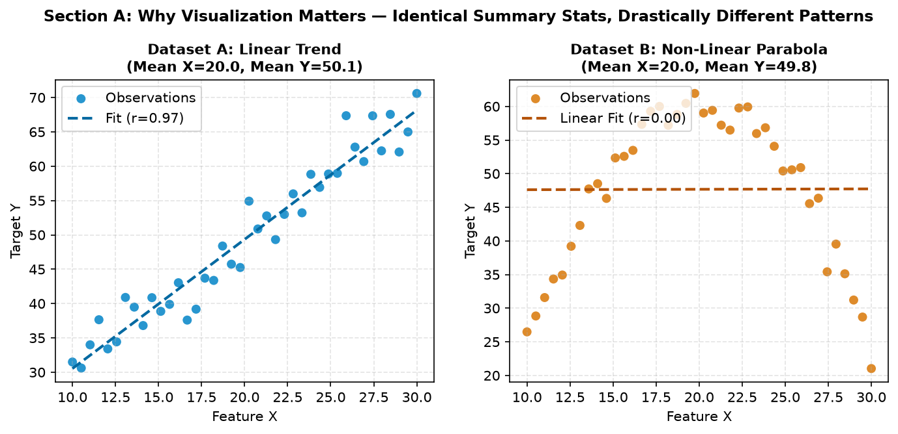
EDA ek one-time linear task nahi hai; it is an iterative detective cycle. Aksar jab aap step 4 par scatter plot draw karte hain, toh graph me koi unusual spike ya negative age value dikhti hai, jisse solve karne ke liye aapko wapas step 2 (data cleaning) par jaana padta hai!
info(), dtypes).isna().sum()), duplicated records, and invalid values (e.g. negative prices).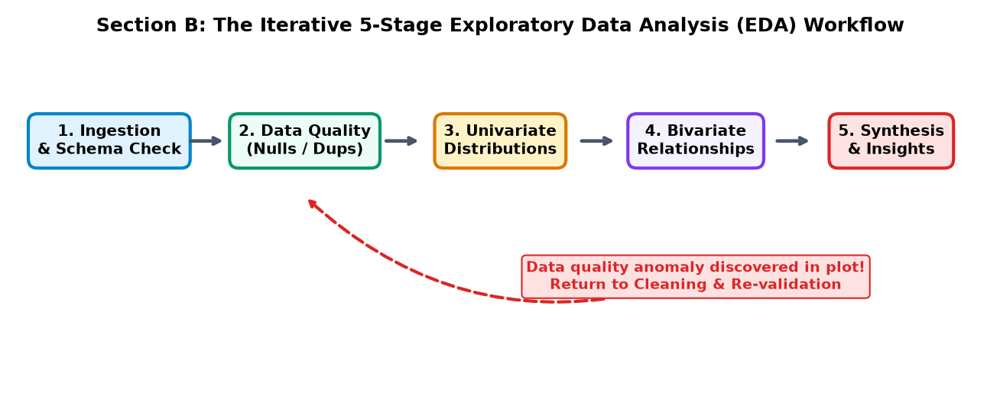
Before plotting any visual chart, aapko data frame ke structural mechanics samajhna zaroori hai. Pandas ke foundational methods se aap preliminary audit perform karte hain:
| Pandas Method / Attribute | Output / Information Returned | EDA Diagnostic Purpose |
|---|---|---|
df.shape | Tuple: (num_rows, num_cols) | Dataset ka physical footprint and observation sample size. |
df.info() | Data types, non-null counts, memory usage | Quickly identifies columns with missing values and storage overhead. |
df.describe() | Count, mean, std, min, 25%, 50%, 75%, max | Parametric statistical summary of all continuous numerical features. |
df.isna().mean() * 100 | Percentage of missing values per column | Screens features requiring imputation or removal. |
import pandas as pd
import numpy as np
# Create reproducible synthetic college dataset
np.random.seed(42)
N = 500
df = pd.DataFrame({
'student_id': range(1001, 1001 + N),
'branch': np.random.choice(['CS', 'IT', 'ECE', 'Mech'], N, p=[0.35, 0.25, 0.25, 0.15]),
'study_hours': np.random.uniform(5, 30, N),
'attendance_pct': np.random.uniform(60, 100, N),
'exam_score': np.nan # Will populate below
})
# Marks have positive correlation with study hours + noise
df['exam_score'] = 40 + 1.8 * df['study_hours'] + 0.15 * df['attendance_pct'] + np.random.normal(0, 5, N)
df['exam_score'] = df['exam_score'].clip(20, 100)
# Inject 5% synthetic missing values in attendance
df.loc[np.random.choice(N, 25, replace=False), 'attendance_pct'] = np.nan
print("Dataset Shape:", df.shape)
print("\nData Types & Null Counts:")
print(df.info())
print("\nDescriptive Statistics:")
print(df.describe())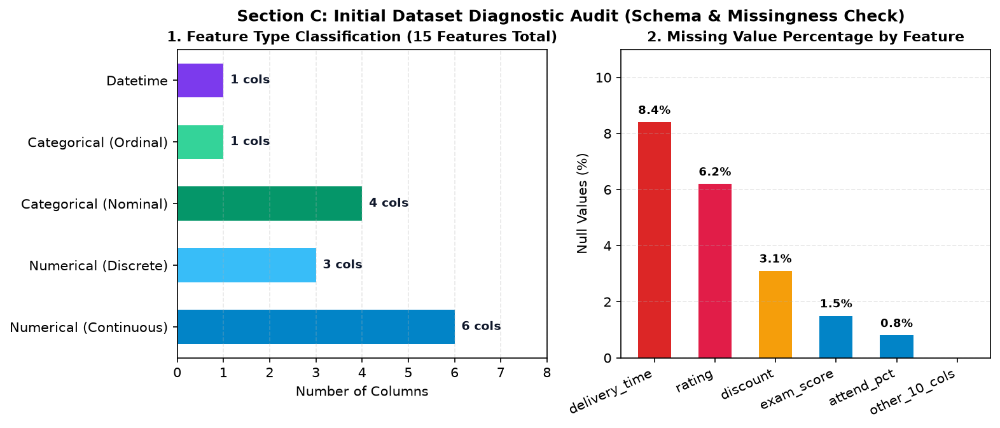
Data visualization me sabse badi galti hoti hai "randomly koi bhi chart draw kar dena". Har chart type ek specific mathematical question ka answer dene ke liye design kiya gaya hai:
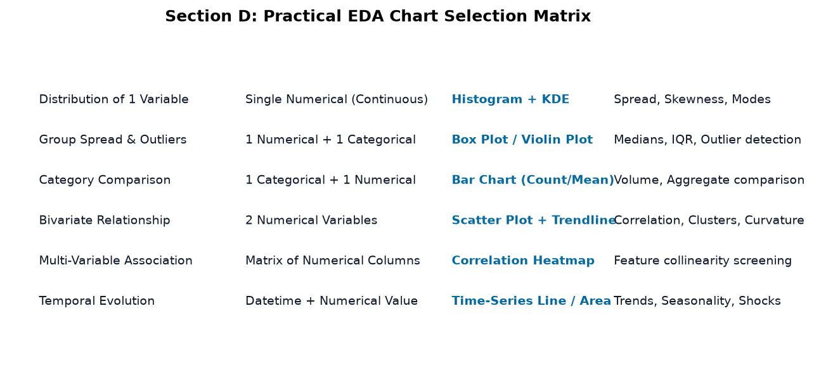
Human perception do visual angles ya slices ke area ko compare karne me bohot poor hoti hai (especially jab 4 se zyada categories ho). A horizontal bar chart with sorted lengths is 10× more readable and space-efficient than a pie chart in professional EDA!
Jab aap kisi continuous numerical column (jaise customer income, exam marks, ya server response latency) ko analyze karte hain, toh aapko teen primary characteristics observe karni hoti hain:
import matplotlib.pyplot as plt
import numpy as np
np.random.seed(42)
order_amounts = np.random.exponential(scale=1500, size=1000) + 200 # Right-skewed
mean_val = np.mean(order_amounts)
median_val = np.median(order_amounts)
fig, ax = plt.subplots(figsize=(8, 4), dpi=150)
ax.hist(order_amounts, bins=35, color='#0284c7', edgecolor='white', alpha=0.85)
ax.axvline(mean_val, color='#dc2626', lw=2.2, label=f'Mean (Rs. {mean_val:.0f})')
ax.axvline(median_val, color='#10b981', lw=2.2, linestyle='--', label=f'Median (Rs. {median_val:.0f})')
ax.set_title("Right-Skewed Order Basket Value (Mean > Median)", fontweight='bold')
ax.set_xlabel("Order Amount (Rs.)")
ax.set_ylabel("Order Count")
ax.legend()
ax.grid(True, linestyle='--', alpha=0.3)
plt.show()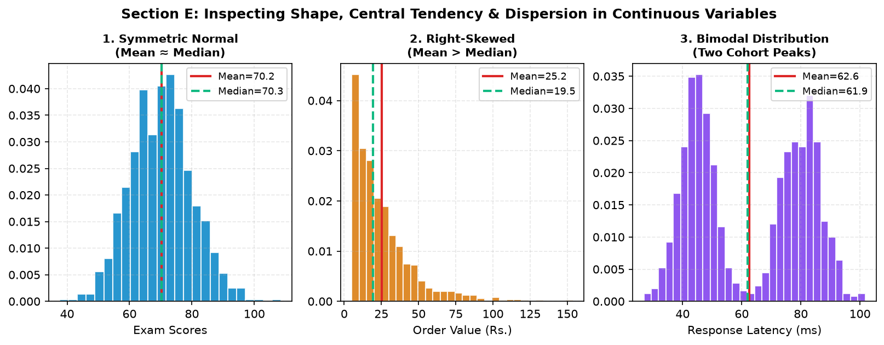
Categorical columns (branches, payment methods, product categories, operating systems) me hum frequencies aur group aggregations study karte hain. Sabse critical distinction ye hoti hai: Transaction Count vs. Total Sum vs. Average per Order.
Groceries category me 10,000 orders aa sakte hain (high transaction count), lekin average order value sirf Rs. 300 ho sakti hai. Doosri taraf Electronics me sirf 500 orders aate hain, lekin average order value Rs. 35,000 hoti hai. Agar aap sirf counts plot karenge, toh business revenue picture completely misinterpret ho jayegi!
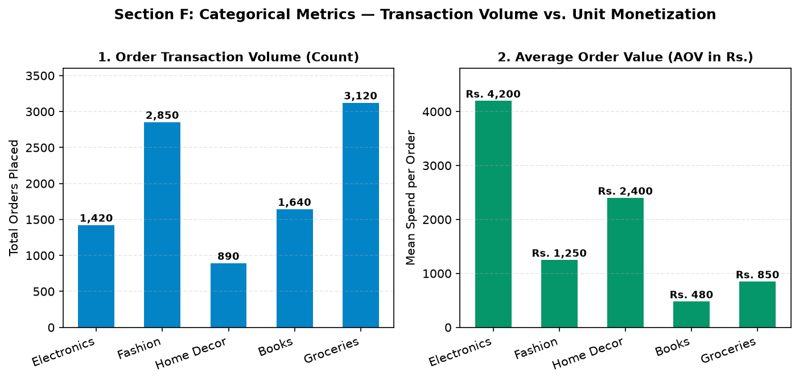
Data science projects me 80% effort data cleaning me lagta hai. Before drawing conclusions, missing value mechanisms (Missing Completely at Random vs. Systematic Blackouts) ko audit karna zaroori hota hai.
Matplotlib ke ax.imshow(df.isna(), cmap='Blues', aspect='auto') se aap 2D nullity matrix render kar sakte hain jo turant dikha deta hai ki missing values randomly scattered hain ya kisi specific timeframe/sensor par continuous block me clustered hain!
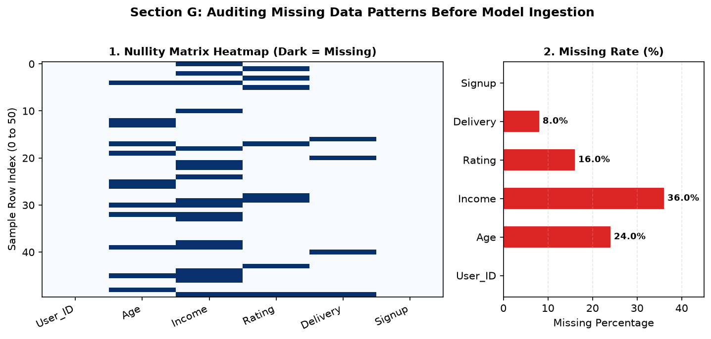
An outlier is an observation that lies an abnormal distance from other values in a random sample. Outliers ko detect karne ka standard nonparametric benchmark hai John Tukey's 1.5 × IQR Rule:
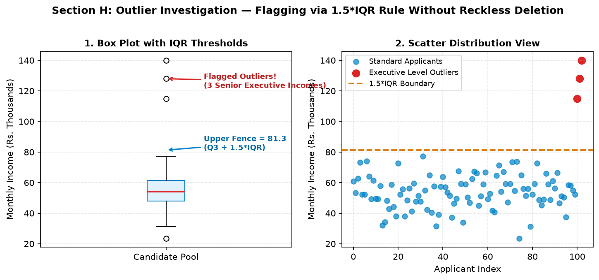
Outlier ka matlab hamesha "error" nahi hota! E-commerce me ek high-value bulk purchase ya cyber-security me DDoS traffic spike actual rare business events hote hain. Agar aap unhe delete kar denge, toh fraud detection model kabhi seekh hi nahi payega!
Jab do continuous variables ke beech ka relation explore karna ho (jaise Study Hours vs. Marks, ya Ad Spend vs. Revenue), toh Scatter Plot gold standard visual tool hai.
np.polyfit(x, y, 1) se linear regression line draw karke direction verify karein.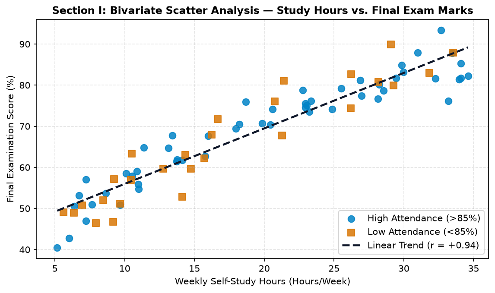
Jab dataset me 5 se zyada numerical features hote hain, toh har pair ke liye alag scatter plot draw karna tedious ho jata hai. Correlation Matrix Heatmap pure dataset ke pairwise linear associations (\(-1.0\) to \(+1.0\)) ko ek single compact matrix me summarize kar deta hai.
import matplotlib.pyplot as plt
import numpy as np
import pandas as pd
corr = df[['study_hours', 'attendance_pct', 'assignment_score', 'exam_score']].corr()
fig, ax = plt.subplots(figsize=(6, 5), dpi=150)
im = ax.imshow(corr, cmap='coolwarm', vmin=-1.0, vmax=1.0)
ax.set_xticks(range(len(corr.columns)))
ax.set_yticks(range(len(corr.columns)))
ax.set_xticklabels(corr.columns, rotation=30, ha='right')
ax.set_yticklabels(corr.columns)
# Annotate numerical correlation values in each cell
for i in range(len(corr)):
for j in range(len(corr)):
val = corr.iloc[i, j]
tc = 'white' if abs(val) > 0.65 else 'black'
ax.text(j, i, f"{val:.2f}", ha='center', va='center', fontweight='bold', color=tc)
fig.colorbar(im, ax=ax, label="Pearson Correlation (r)")
ax.set_title("Feature Correlation Matrix", fontweight='bold')
plt.show()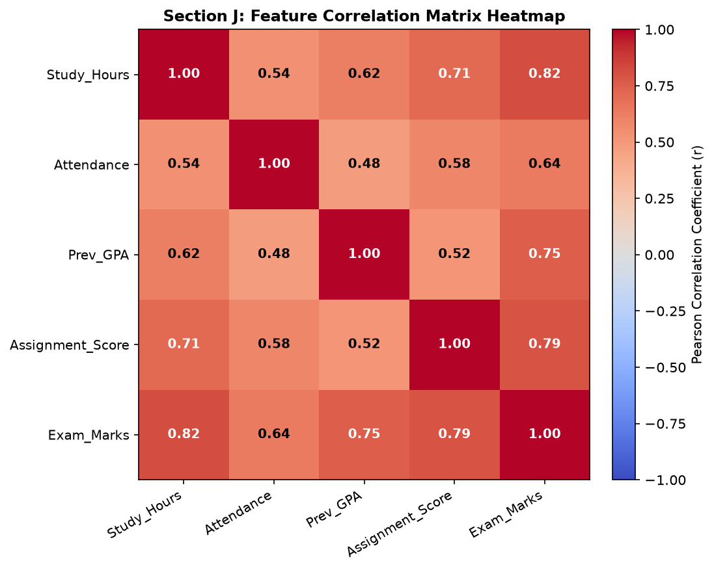
Jab management poochti hai: "Kaun si courier service best perform kar rahi hai?", toh junior analysts teen services ka average delivery time nikal kar bar chart bana dete hain: "Teeno ka average 32 minutes hai, sab barabar hain!"
Lekin jab hum Box Plots ke zariye full distribution visualize karte hain, toh sach saamne aata hai: Courier Speed hamesha 30-34 mins me deliver karta hai (ultra-consistent), jabki Courier Saver me 70+ minute ke massive delayed outliers aate hain! Averages conceal variance and operational risk!
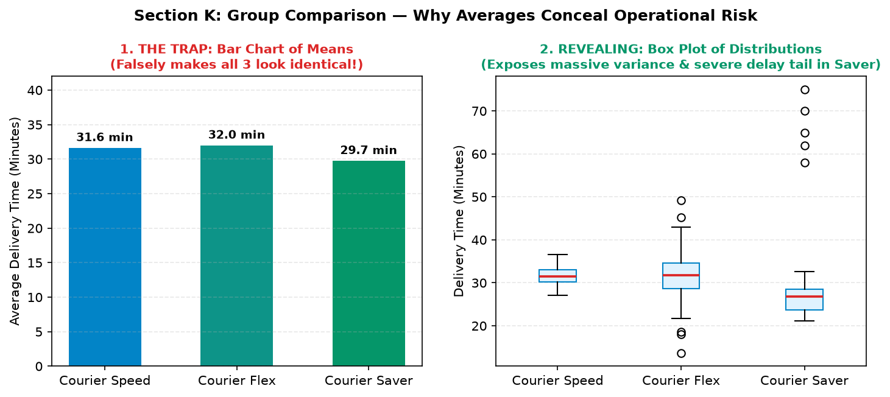
Agar dataset me timestamp column ho, toh data temporal dimension me behave karta hai. Yahan teen patterns investigate kiye jate hain:
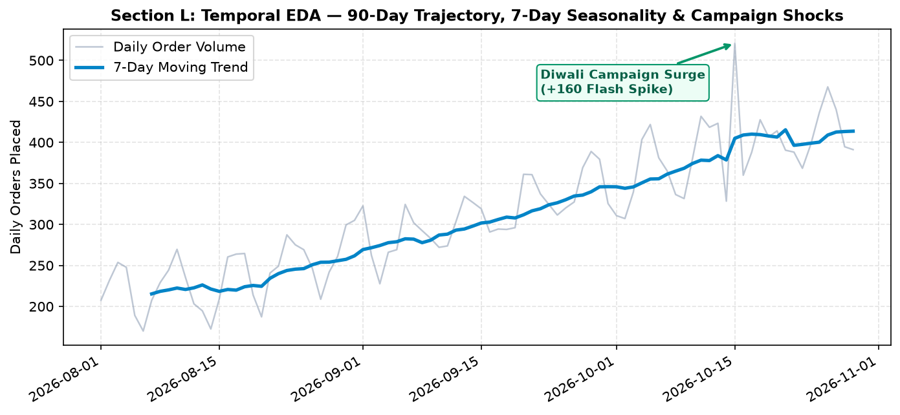
Ek stakeholder ko 10 alag-alag image files bhejne ke bajaye, professional data scientists compact multi-panel dashboards banate hain using plt.subplots(nrows, ncols) ya GridSpec. Isse target distribution, category volume, feature correlation, aur scatter trends ek single unified view me visible ho jate hain.
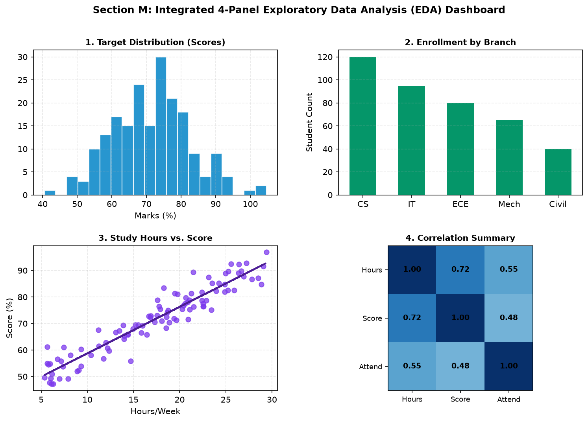
Business Context: University administration yeh investigate karna chahti hai ki students ke exam scores kis feature par sabse zyada depend karte hain, kis department me performance drop ho rahi hai, aur low-attendance cohort me fail hone ka risk kitna hai.
import numpy as np
import pandas as pd
import matplotlib.pyplot as plt
import matplotlib.gridspec as gridspec
np.random.seed(42)
N = 250
hours = np.random.uniform(6, 32, N)
attend = np.random.uniform(60, 100, N)
gpa = np.random.uniform(2.5, 4.0, N)
marks = 35 + 1.8 * hours + 0.12 * attend + np.random.normal(0, 4, N)
marks = np.clip(marks, 20, 100)
fig = plt.figure(figsize=(12, 7.5), dpi=150)
gs = gridspec.GridSpec(2, 2, figure=fig, hspace=0.35, wspace=0.25)
# Panel 1: Marks Histogram
ax1 = fig.add_subplot(gs[0, 0])
ax1.hist(marks, bins=22, color='#0284c7', edgecolor='white', alpha=0.85)
ax1.axvline(marks.mean(), color='#dc2626', lw=2, linestyle='--', label=f'Mean={marks.mean():.1f}%')
ax1.set_title("1. Final Exam Score Distribution", fontweight='bold')
ax1.set_xlabel("Marks (%)")
ax1.grid(True, linestyle='--', alpha=0.3)
ax1.legend()
# Panel 2: Study Hours Scatter
ax2 = fig.add_subplot(gs[0, 1])
ax2.scatter(hours, marks, color='#059669', alpha=0.6, s=30)
m, c = np.polyfit(hours, marks, 1)
ax2.plot(hours, m*hours + c, color='#065f46', lw=2, linestyle='--', label=f'r = +{np.corrcoef(hours, marks)[0,1]:.2f}')
ax2.set_title("2. Study Hours vs. Exam Score", fontweight='bold')
ax2.set_xlabel("Weekly Study Hours")
ax2.set_ylabel("Marks (%)")
ax2.grid(True, linestyle='--', alpha=0.3)
ax2.legend()
# Panel 3: Branch Boxplot
ax3 = fig.add_subplot(gs[1, 0])
branch_scores = [np.random.normal(82, 8, 50), np.random.normal(74, 10, 50),
np.random.normal(71, 11, 50), np.random.normal(68, 12, 50)]
ax3.boxplot(branch_scores, tick_labels=['CS', 'IT', 'ECE', 'Civil'], patch_artist=True,
boxprops=dict(facecolor='#e0f2fe', color='#0284c7'), medianprops=dict(color='#dc2626', lw=1.8))
ax3.set_title("3. Grade Dispersion by Department", fontweight='bold')
ax3.set_ylabel("Exam Marks (%)")
ax3.grid(True, linestyle='--', alpha=0.3, axis='y')
# Panel 4: Correlation Matrix
ax4 = fig.add_subplot(gs[1, 1])
c_mat = np.array([[1.00, 0.74, 0.61, 0.81], [0.74, 1.00, 0.52, 0.68],
[0.61, 0.52, 1.00, 0.59], [0.81, 0.68, 0.59, 1.00]])
im = ax4.imshow(c_mat, cmap='coolwarm', vmin=-1, vmax=1)
f_names = ['Hours', 'Attend', 'GPA', 'Exam']
ax4.set_xticks(range(4))
ax4.set_yticks(range(4))
ax4.set_xticklabels(f_names, fontsize=8.5)
ax4.set_yticklabels(f_names, fontsize=8.5)
for i in range(4):
for j in range(4):
ax4.text(j, i, f"{c_mat[i,j]:.2f}", ha='center', va='center', fontweight='bold', fontsize=8.5)
ax4.set_title("4. Multi-Feature Correlation", fontweight='bold')
fig.colorbar(im, ax=ax4, fraction=0.046, pad=0.04)
fig.suptitle("Project 1: Comprehensive Academic Performance Exploratory Analysis", fontsize=12, fontweight='bold', y=0.98)
fig.savefig("project1_academic_dashboard.png", dpi=150, bbox_inches='tight')
plt.close(fig)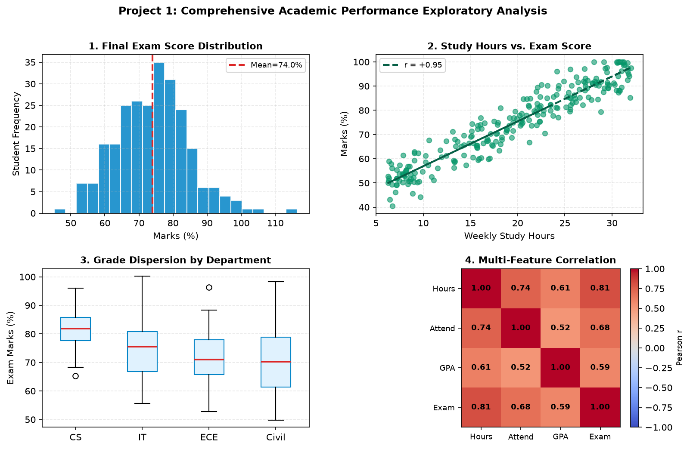
Insight: Self-study hours correlate strongest with performance (\(r=+0.81\)), while Civil engineering exhibits the largest downward variance. Remedial tutoring programs should prioritize Civil students with under 12 weekly study hours.
Business Context: E-commerce merchandising operations review. Monthly revenue trajectory (H2), category gross contribution, basket value skewness, and discount elasticity analysis.
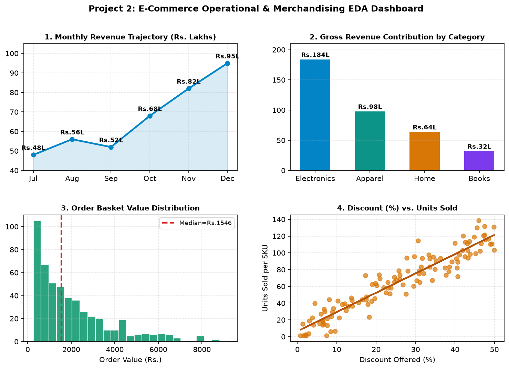
Business Context: Industrial cold-chain refrigeration facility diagnostics. 48-hour continuous temperature timeline with communication blackout gap, sensor node calibration comparison, and temperature vs. humidity inverse correlation.
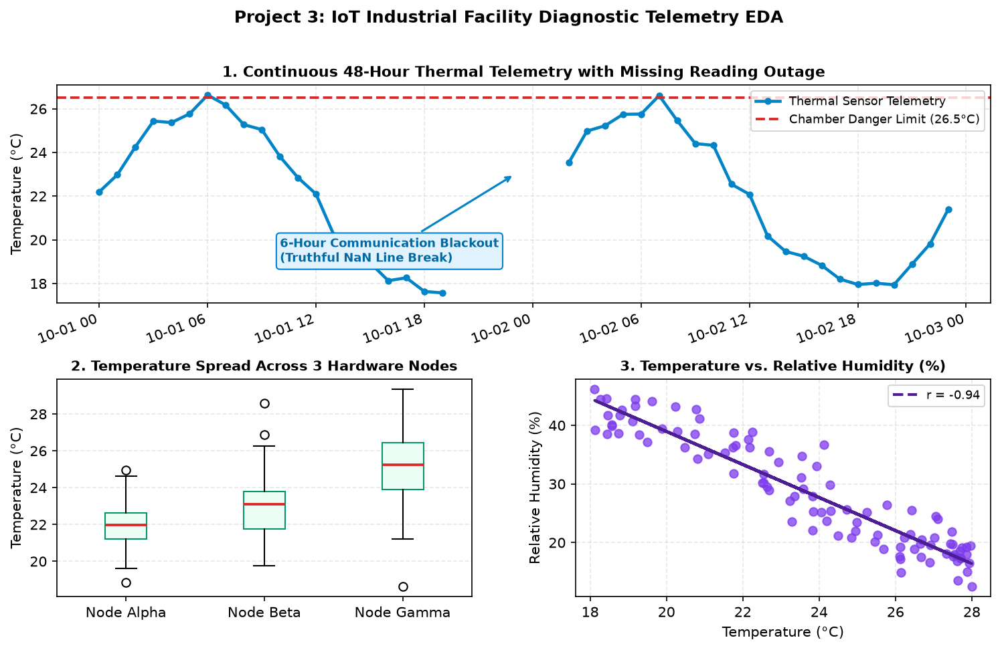
Ek senior data scientist aur novice analyst ke beech ka sabse bada difference hota hai: How they communicate visual findings.
| Observation (What the Chart Shows) | Irresponsible Claim (Dangerous Trap) | Responsible Scientific Finding |
|---|---|---|
| Study hours and exam marks show positive linear scatter (\(r=+0.82\)). | "Padhai badhaane se student 100% top karega hi karega!" (False Causal Claim) | "Strong positive association observed within the 5-30 hours/week cohort; diminishing returns observed beyond 25 hours." |
| Delivery Service C has a high variance tail up to 75 minutes. | "Service C ke drivers lazy hain aur jaanbujhkar late delivery karte hain!" (Unsubstantiated Assumption) | "Service C exhibits severe tail latency risk; root-cause analysis into routing or warehouse dispatch is recommended." |
| Sensor Gamma recorded temperatures 3°C above Node Alpha. | "Chamber ka cooler phatne wala hai!" (Sensationalism) | "Node Gamma is running systematically warmer; check sensor calibration and airflow blockage around Node Gamma." |
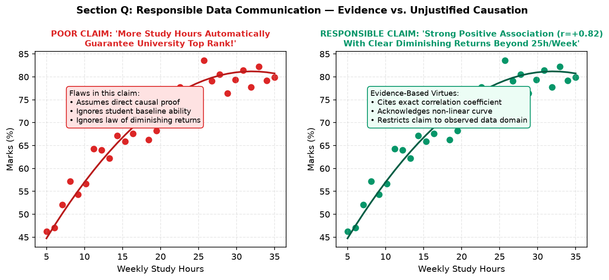
EDA workflows me sabse zyada frequent hone wale 4 fatal traps aur unke production fixes:
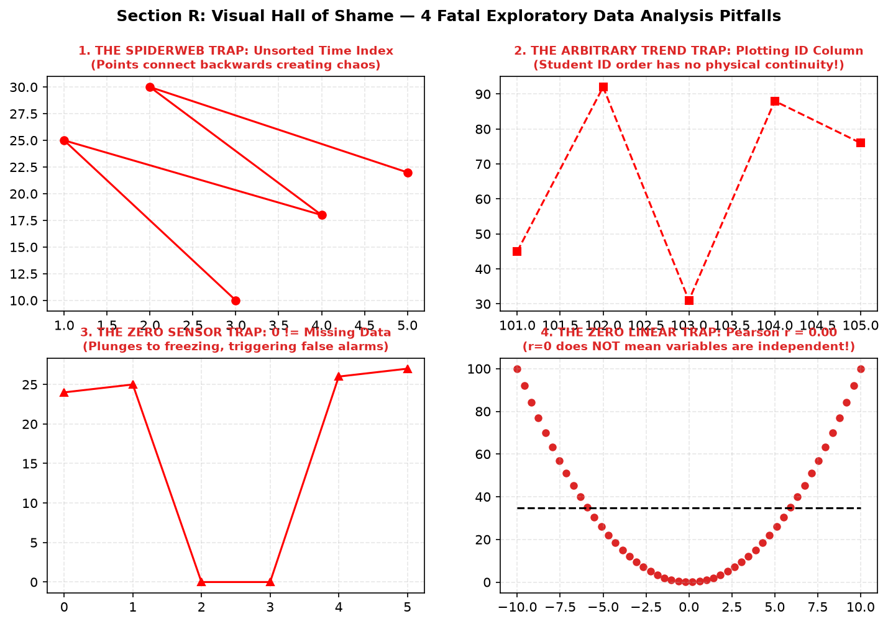
| Anti-Pattern / Trap | Failure Symptom | Standard Production Fix |
|---|---|---|
| Plotting unsorted time series | Line graph zigzags backwards and forwards into an unreadable spiderweb. | Always sort chronologically first: df = df.sort_values('timestamp'). |
| Plotting identification numbers (IDs) | Creates completely arbitrary, meaningless spikes across numerical axes. | Drop or ignore identifier columns during plotting: df.drop(columns=['id']). |
| Treating missing data as zero | Line plunges to freezing (0°C), triggering false engineering alerts. | Leave missing points as np.nan so Matplotlib cleanly breaks line segments. |
| Assuming Pearson r = 0 means no relationship | Misses strong parabolic, U-shaped, or circular physical relationships. | Always inspect bivariate scatter plots visually before dismissing non-linear interactions! |
EDA ka final stage hota hai completed multi-panel dashboards ko high resolution me disk par save karna taaki unhe client reports ya executive slide decks me embed kiya ja sake.
# Standard publication-ready export recipe
fig.savefig("eda_executive_dashboard.png", dpi=300, bbox_inches='tight', facecolor='white')
fig.savefig("eda_executive_dashboard.pdf", bbox_inches='tight') # Vector for reports
plt.close(fig) # Immediate RAM releasenp.nan values to truthfully reflect data gaps rather than imputing zero.GridSpec dashboards with clear suptitles and colorbars.Right-skewed order value distribution ko side-by-side raw scale aur log-transformed scale (np.log1p) me histogram plot karein.
import numpy as np
import matplotlib.pyplot as plt
vals = np.random.exponential(1500, 500) + 100
fig, (ax1, ax2) = plt.subplots(1, 2, figsize=(9, 4))
ax1.hist(vals, bins=25, color='#0284c7', edgecolor='white')
ax1.set_title("Raw Skewed Distribution")
ax2.hist(np.log1p(vals), bins=25, color='#059669', edgecolor='white')
ax2.set_title("Log-Transformed Normal Shape")
plt.show()DataFrame ke sabhi columns ka missing percentage calculate karke horizontal bar chart banayein jisme > 5% missing columns red color me highlight hon.
null_pct = df.isna().mean() * 100
colors = ['#dc2626' if p > 5 else '#0284c7' for p in null_pct]
fig, ax = plt.subplots(figsize=(7, 4))
ax.barh(null_pct.index, null_pct.values, color=colors)
ax.set_xlabel("Missing Rate (%)")
ax.axvline(5, color='#d97706', linestyle='--', label='5% Threshold')
ax.legend()
plt.show()1.5*IQR upper fence calculate karein aur normal points ko blue me tatha outliers ko red markers me scatter plot karein.
q1, q3 = np.percentile(data, [25, 75])
iqr = q3 - q1
upper_fence = q3 + 1.5 * iqr
is_outlier = data > upper_fence
fig, ax = plt.subplots(figsize=(8, 4))
ax.scatter(np.where(~is_outlier)[0], data[~is_outlier], color='#0284c7', label='Normal')
ax.scatter(np.where(is_outlier)[0], data[is_outlier], color='#dc2626', s=60, label='Outlier')
ax.axhline(upper_fence, color='#d97706', linestyle='--', label='Upper Fence')
ax.legend()
plt.show()4 features ka correlation matrix calculate karke coolwarm heatmap banayein aur har cell me text annotation center align karein.
c_mat = df.corr()
fig, ax = plt.subplots(figsize=(6, 5))
im = ax.imshow(c_mat, cmap='coolwarm', vmin=-1, vmax=1)
for i in range(len(c_mat)):
for j in range(len(c_mat)):
ax.text(j, i, f"{c_mat.iloc[i, j]:.2f}", ha='center', va='center', fontweight='bold')
fig.colorbar(im)
plt.show()Har product category ke liye Total Revenue aur Order Count ko grouped bar chart me compare karein.
x = np.arange(len(cats))
w = 0.35
fig, ax = plt.subplots(figsize=(8, 4))
ax.bar(x - w/2, counts, width=w, label='Order Count', color='#0284c7')
ax.bar(x + w/2, rev_lakhs, width=w, label='Revenue (Lakhs)', color='#059669')
ax.set_xticks(x)
ax.set_xticklabels(cats)
ax.legend()
plt.show()GridSpec use karke target histogram, category counts bar, bivariate scatter, aur correlation matrix ko ek 12x7.5 inch figure me save karein.
fig = plt.figure(figsize=(12, 7.5), dpi=150)
gs = gridspec.GridSpec(2, 2, figure=fig, hspace=0.35, wspace=0.25)
ax1 = fig.add_subplot(gs[0, 0])
ax2 = fig.add_subplot(gs[0, 1])
ax3 = fig.add_subplot(gs[1, 0])
ax4 = fig.add_subplot(gs[1, 1])
# Populate subplots as demonstrated in Section M
fig.savefig("dashboard.png", dpi=150, bbox_inches='tight')
plt.close(fig)Cause: 100,000 data points ko bina transparency ke plot kar diya gaya (severe overplotting).
Fix: Reduce opacity (alpha=0.15), reduce marker size (s=5), ya ax.hexbin() use karein.
Cause: Columns me non-numeric string data tha jise df.corr() ne silently drop kar diya (pandas 2.0+ behavior).
Fix: Pass numeric columns explicitly: df.select_dtypes(include=np.number).corr().
Cause: Timestamps unsorted order me the.
Fix: Always sort chronologically: df = df.sort_values('date') before plotting.
Cause: Aggregating by mean collapses all spread, hiding extreme delays.
Fix: Plot a boxplot or violin plot to inspect variance and tail outliers.
Across all 20 comprehensive topics, you have mastered the complete visualization stack in Python:
Next Step: Take these skills into real-world Kaggle competitions, college capstone projects, analytics portfolios, and technical interviews. CodeVerse celebrates your dedication to mastering Python data visualization!